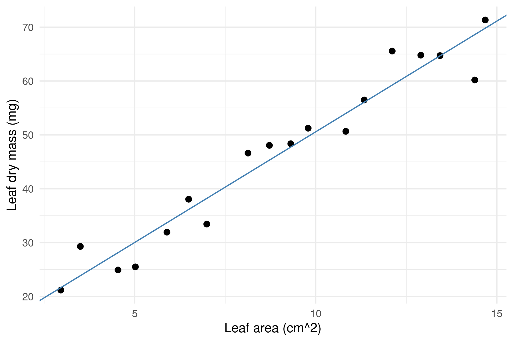

library(readr)
library(dplyr)
library(ggplot2)
leaves <- read_csv("data/leaf-mass.csv", show_col_types = FALSE)
leaf_plot <- ggplot(leaves, aes(x = leaf_area_cm2, y = dry_mass_mg)) +
geom_point(size = 2) +
labs(x = "Leaf area (cm²)", y = "Leaf dry mass (mg)") +
theme_minimal()
leaf_plot
leaf_fit <- lm(dry_mass_mg ~ leaf_area_cm2, data = leaves)
coef(leaf_fit)Day 20 — A biological association
Today’s question
Do larger leaves tend to have greater dry mass? We now fit a line to observations of different plants, rather than prepared calibration standards. The R function is familiar, but the biological interpretation changes. A relationship between two measurements does not by itself establish that changing one causes the other.
data/leaf-mass.csv contains simulated data from one sampled leaf on each of 18 independent plants. leaf_area_cm2 measures area and dry_mass_mg measures mass after drying. The study is observational: leaf area was not randomly assigned. Species, age, environment, and other features could influence both measurements. We begin with the simple question about association within the observed range.
Plot first, then fit
Read the formula aloud: explain dry mass using leaf area. The fitted intercept is about 9.48 mg and slope about 4.11 mg/cm². In these observations, a one cm² difference in leaf area is associated with a fitted mean difference of about 4.11 mg in dry mass. The line summarises a tendency, not a fixed ratio that every leaf obeys.
leaf_plot <- leaf_plot +
geom_abline(intercept = coef(leaf_fit)[1], slope = coef(leaf_fit)[2],
colour = "steelblue")
leaf_plot
range(leaves$leaf_area_cm2)
The observed areas range from 2.96 to 14.68 cm². An intercept is mathematically the fitted mass at zero area, but zero lies outside our data. Do not claim that a leaf with no area biologically weighs 9.48 mg. The fitted intercept helps position a line over the observed range.
A line leaves individual differences
leaves <- leaves |>
mutate(fitted_mass_mg = fitted(leaf_fit),
residual_mg = residuals(leaf_fit))
leaf_residual_plot <- ggplot(leaves, aes(x = leaf_area_cm2, y = residual_mg)) +
geom_hline(yintercept = 0, linetype = "dashed") +
geom_point(size = 2) +
labs(x = "Leaf area (cm²)", y = "Observed − fitted mass (mg)") +
theme_minimal()
leaf_residual_plot
Describe the residual pattern in ordinary language. Are points on both sides of zero? Is there obvious curvature? Does spread appear much greater at one end? These checks help identify limitations; they are not proof that every model assumption is satisfied. Independence still comes from how the plants were sampled, not from the residual plot.
Unusual points can influence the line, especially near the ends of the area range. We can explore that influence without deleting data from the main analysis:
without_a18 <- leaves |> filter(plant_id != "A18")
sensitivity_fit <- lm(dry_mass_mg ~ leaf_area_cm2, data = without_a18)
coef(leaf_fit)
coef(sensitivity_fit)This is a demonstration, not a search for the slope we prefer. A18 has no known recording error and belongs in the main result. Compare the slopes and note whether omitting it changes the broad description. Never select observations according to which omission gives the smallest p-value.
Keep prediction within the evidence
For an area of 8 cm², calculate the fitted mean mass using the line:
coef(leaf_fit)[1] + coef(leaf_fit)[2] * 8The result is about 42.36 mg. It is a fitted mean, not a promise that the next leaf will have that mass. There is individual variation around the line and uncertainty in the line itself. An area of 80 cm² is far outside the measured range; extrapolating there would rely on an untested assumption that the same relationship continues.
Practical: choose an analysis for a question
Create association-report.Rmd at the project root. Include the study design, point plot with fitted line, residual plot, slope interpretation with units, and observed range. Add a short sensitivity note explaining what the A18 exercise showed, while retaining all observations in the main model. Save the main figure as output/day20-leaf-line.png and render the report.
Finish with three sentences that answer different questions:
- What association did we observe?
- What does the fitted slope mean numerically and biologically?
- What causal claim would this design fail to establish?
Then compare your reports from days 17 and 19. A two-group treatment question motivated a comparison of means; a concentration measurement motivated a calibration line; today’s two measured variables motivate an association. The biological question and design come before the choice of R function.
Hint: a precise slope sentence
Use “Within the observed area range, an additional 1 cm² of leaf area was associated with approximately … mg greater fitted mean dry mass.” Avoid “making the leaf larger causes …”, because this study did not manipulate area.
Check your understanding
- Is the slope measured in mg, cm², or mg/cm²? mg/cm².
- Does a strong relationship establish causation? No.
- Would 18 leaves from one plant provide the same independent sample as 18 plants? No; leaves sharing a plant may be dependent.
Leave with: a rendered association report and a clear explanation of how its question differs from a treatment comparison or instrument calibration.